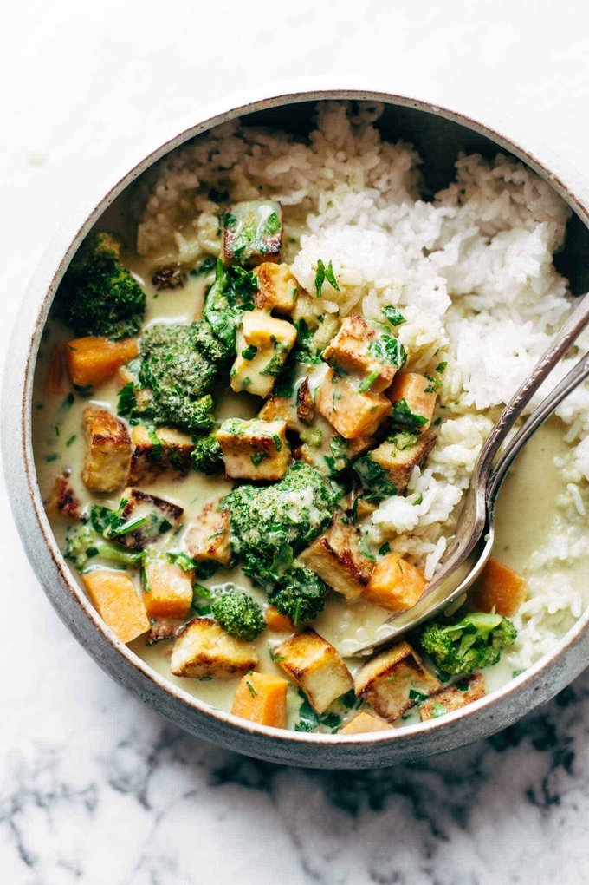

Tofu Curry

Ingredients
- 12 ounces firm tofu
- Olive oil and salt
- 2 sweet potatoes (peeled/cubed)
- 4 tablespoons green curry paste (I used Thai Kitchen)
- three 14-ounces cans coconut milk
- about 3 cups broccoli florets
Instructions
- Tofu: Press the tofu with paper towels to remove water. Cut tofu into cubes. In a large soup pot, heat the olive oil over medium high heat. Add the tofu, sprinkle with salt, and pan fry for 10-15 minutes, until golden brown. Remove and set aside.
- Veggies: Add sweet potatoes, coconut milk, and curry paste to the soup pot. Simmer for 5-10 minutes until potatoes are fork-tender. Add broccoli and tofu. Simmer for 3-5 minutes until broccoli is bright green.
- Finishing it off: I like to add a handful of golden raisins and cilantro (I know, I know, lots of levels of weird going on here) and I pinky promise that a quick swish of fish sauce and a sprinkle of brown sugar will take this over the top.